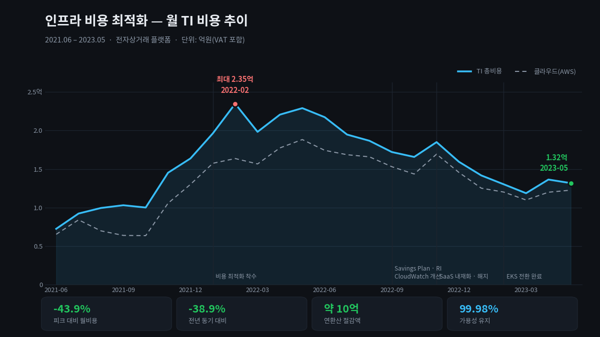

클라우드 비용 최적화와 제3자 의존성 제거
월 인프라 비용 43.9% 절감(연환산 약 10억 원)으로 기업 BEP 달성에 직접 기여하고, MSP 기술지원 없이 자체 운영으로 전환해 외부 의존성을 구조적으로 제거했습니다.
| 조직 | 시기 | 역할 |
|---|---|---|
| 트렌비 | 2021.06 – 2024.12 | SRE Lead — 비용 · 계약 총괄 |
출발점 — 비용 관리 체계 없음. 인프라 비용 우상향. 명목상 MSP에 운영을 맡기고 있었으나 실제 통제권은 안에도 밖에도 없음.
문제
비용이 오르는 것 자체보다, 왜 오르는지 설명할 수 없다는 것이 문제였습니다.
- 어떤 리소스가 어떤 서비스에 쓰이는지 귀속이 안 됐습니다.
- MSP에 기술지원 비용을 내고 있었지만, 실제 운영 판단은 내부에서 하고 있었습니다. 돈은 나가는데 역량은 안 쌓였습니다.
- 상용 제품 라이선스가 여러 개 있었고, 각각 계약 시점이 달라 전체 그림이 없었습니다.
그리고 비용 절감은 대개 일회성으로 끝납니다. 한 번 줄이고 나면 다시 오릅니다.
제약
- 같은 기간에 플랫폼을 다시 짓고 가용성을 올려야 했습니다.
- 회사가 BEP를 향해 가던 시기였습니다. 절감이 서비스 품질 저하로 나타나면 안 됐습니다.
- 인력이 늘지 않는 조건이었습니다.
접근 — 네 개의 레버를 순서대로

1. 계약 레버 — 구조 자체를 조정
- AWS EDP 계약
- MSP 보상 합의
- CDN 비용전략 합의
단가를 깎는 협상이 아니라 계약 구조를 바꾸는 협상이었습니다. 어떤 항목이 왜 그 가격인지를 TCO로 분해해 놓으면, 협상 테이블에서 이야기할 것이 달라집니다.
2. 제3자 의존성 제거 — MSP 기술지원 미수령, 자체 운영 전환
가장 큰 구조 변경입니다.
MSP 기술지원을 받지 않고 인프라를 자체 운영하기로 했습니다. 비용 절감이 목적의 절반이고, 나머지 절반은 외부 사업자에 대한 의존성 제거였습니다.
- 장애 시 대응 속도가 외부 조직의 SLA에 묶이지 않음
- 운영 역량이 내부에 남음
- 아키텍처 변경에 외부 승인 단계가 사라짐
이건 비용 결정이면서 동시에 리스크 결정이었습니다. 플랫폼을 다시 짓는 시기와 겹쳤기 때문에 가능했습니다 — 어차피 새로 배워야 할 것을 내부에서 배웠습니다.
3. 구조 레버 — 오픈소스 대체와 SaaS 내재화
| 대체 전 | 대체 후 |
|---|---|
| ElasticSearch | Loki + Promtail |
| 상용 DB | Percona |
| 일부 SaaS | 내재화 또는 해지 |
로그 스택 교체는 비용만의 문제가 아니었습니다. ElasticSearch는 운영 부담이 크고, 인력이 없는 조직에서는 그 부담 자체가 리스크입니다.
4. 아키텍처 레버 — EKS 전환
플랫폼 리빌드로 리소스 밀도가 올라가면서 비용이 다시 내려갔습니다.
5. 일회성을 상시 체계로 — Multi Cloud Cost Explorer
Imply 기반 Multi Cloud Cost Explorer를 구축해, 기술 도입·대체·계약의 전 과정을 TCO 분석으로 검증하는 의사결정 체계를 운영했습니다.
절감이 유지되려면 "왜 이 지출이 필요한가"를 상시로 물을 수 있는 도구가 있어야 합니다. 분기마다 사람이 엑셀로 들여다보는 방식은 반드시 무너집니다.
결과
| 지표 | 값 |
|---|---|
| 피크 대비 월비용 | -43.9% (2.35억 → 1.32억, VAT 포함) |
| 전년 동기 대비 | -38.9% |
| 연환산 절감액 | 약 10억 원 |
| 같은 기간 가용성 | 99.98% 유지 |
- 기업 BEP 달성에 직접 기여
- 일회성 절감이 아니라 상시 관리 체계로 전환
- 외부 사업자 없이 인프라를 운영할 수 있는 내부 역량 확보
회고
비용과 리스크는 같은 문제의 두 얼굴이었습니다. MSP 기술지원을 끊은 건 비용 때문에 시작했지만, 결과적으로 가장 큰 이득은 장애 대응이 외부 조직의 응답 시간에 묶이지 않게 된 것이었습니다.
절감액보다 중요한 건 설명 가능성입니다. 43.9%라는 숫자보다, "이 항목이 왜 이만큼인가"에 언제든 답할 수 있게 된 것이 이후 의사결정을 바꿨습니다. 새 도구를 도입할 때 TCO를 먼저 계산하는 게 당연한 절차가 됐습니다.
가용성을 깎지 않고 줄일 수 있었던 이유는 플랫폼 리빌드 회고에 적었습니다 — 기존 지출의 상당 부분이 가용성이 아니라 검증되지 않은 안심에 쓰이고 있었습니다.
관련 케이스 — EKS 플랫폼 리빌드 · 클라우드 보안 프레임워크
AWS EDP Savings Plan/RI TCO 분석 Imply/Druid Loki+Promtail Percona MSP 계약 CDN